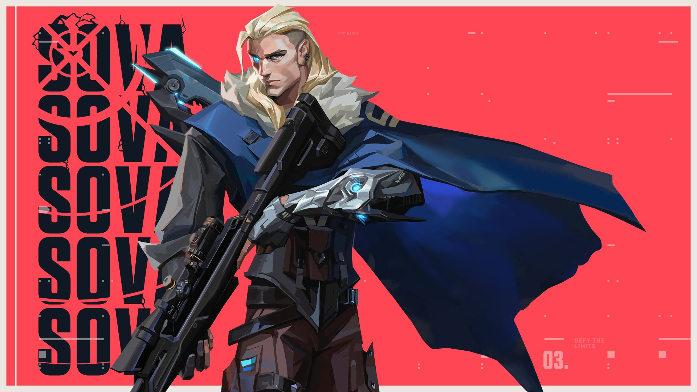

Sova - Initiator
Sova is a tracker and reconnaissance agent who excels at locating enemies and providing his team with critical information.

Abilities
- Recon Bolt: Fires a bolt that reveals the location of enemies.
- Owl Drone: Deploys a drone to scout the area and tag enemies.
- Shock Bolt: Fires a bolt that explodes and damages enemies.
- Hunter's Fury: Fires powerful energy blasts that can penetrate walls and hit enemies at long range.
Learn about other agents on the Agents Page.